lorenz_partial_additive_splitmode_p30_obsnoise005_top3nd_init15_autodim__lc_sweep__step1_int1_maxep80Project: Lorenz_INDpartial_NDInitSweep_autodim_D1_NormTrue__JacobianODE
Launched: 2026-04-27T05:35:10Z
Completed: 2026-04-27T10:50:14Z
Outcome: complete_clean
Git: latent-JacobianODE @ b5cc868
Expected runs: 21
lorenz_partial_additive_splitmode_p30_obsnoise005_top3nd_init15_autodim__lc_sweepDescription
Lorenz partial additive coupling, obs_noise=0.05, top-3 n_delays {45, 80, 85}, traj_init_steps=15, prediction_steps=30, splitmode (reconstruction_mode=uniform + trajectory_loss_most_recent=true, both explicit). 21-run sweep over 7 LC weights {0, 1e-6, 1e-5, 1e-4, 1e-3, 1e-2, 1e-1}. n_target_dims auto via PCA (threshold=0.99), final_perm_identity=true, init_pca_basis=false. Submitted to ou_bcs_normal for fast turnaround.
Hypothesis
Reproduce the original top3nd LC sweep cleanly under explicit split mode. Best val traj should match the original sweep's best (~5.5e-3 at LC=1e-4, n_delays=45). At this noise level LC=0 and LC=1e-6 never passed C1+C2+C3 in the original — we keep them in the grid as explicit baselines showing what "no loop closure" looks like at high noise. LC=1 and LC=10 were dropped (best_traj noticeably worse than the optimum).
Success criteria
Swept axes (8): data.train_test_params.delay_embedding_params.n_delays, model.encoder.n_input, model.n_target_dims, model.n_target_dims_pca_auto, model.n_target_dims_pca_cum_var, model.params.input_dim, model.params.output_dim, training.lightning.loop_closure_weight
Chosen run (by best_traj_loss): t6ojwcm3 — traj_loss=0.00538, MASE=0.7829, R²=0.9859, LC loss=1.322, epoch=78.0
Swept-axis values at chosen run: data.train_test_params.delay_embedding_params.n_delays=85 · model.encoder.n_input=85 · model.n_target_dims=14 · model.n_target_dims_pca_auto=14 · model.n_target_dims_pca_cum_var=0.990074 · model.params.input_dim=14 · model.params.output_dim=196 · training.lightning.loop_closure_weight=1.0e-04
Runs analyzed: 21 (expected 21)
| run_idx | run_id | data.train_test_params.delay_embedding_params.n_delays |
model.encoder.n_input |
model.n_target_dims |
model.n_target_dims_pca_auto |
model.n_target_dims_pca_cum_var |
model.params.input_dim |
model.params.output_dim |
training.lightning.loop_closure_weight |
best_traj_loss | best_MASE | R² | LC loss | epoch |
|---|---|---|---|---|---|---|---|---|---|---|---|---|---|---|
| 17 | t6ojwcm3 |
85 | 85 | 14 | 14 | 0.990074 | 14 | 196 | 1.0e-04 | 0.00538 | 0.7829 | 0.9859 | 1.322 | 78.0 |
| 0 | kl677d48 |
45 | 45 | 7 | 7 | 0.990085 | 7 | 49 | 0 | 0.00548 | 0.7877 | 0.9848 | 9.159 | 72.0 |
| 1 | xdt60d9y |
45 | 45 | 7 | 7 | 0.990085 | 7 | 49 | 1.0e-06 | 0.00552 | 0.7887 | 0.9847 | 5.987 | 72.0 |
| 18 | e41qcmeo |
85 | 85 | 14 | 14 | 0.990074 | 14 | 196 | 0.001 | 0.00555 | 0.7909 | 0.9855 | 0.186 | 78.0 |
| 16 | nklxnk93 |
85 | 85 | 14 | 14 | 0.990074 | 14 | 196 | 1.0e-05 | 0.00557 | 0.7854 | 0.9854 | 7.595 | 66.0 |
| 2 | 1uxec95i |
45 | 45 | 7 | 7 | 0.990085 | 7 | 49 | 1.0e-05 | 0.00563 | 0.7906 | 0.9843 | 2.533 | 72.0 |
| 3 | cbh58x37 |
45 | 45 | 7 | 7 | 0.990085 | 7 | 49 | 1.0e-04 | 0.00580 | 0.7931 | 0.9838 | 0.773 | 72.0 |
| 19 | vbapp1cx |
85 | 85 | 14 | 14 | 0.990074 | 14 | 196 | 0.01 | 0.00613 | 0.8158 | 0.9839 | 0.020 | 78.0 |
| 4 | 58m3rqkx |
45 | 45 | 7 | 7 | 0.990085 | 7 | 49 | 0.001 | 0.00628 | 0.8067 | 0.9824 | 0.115 | 71.0 |
| 9 | zkemzldj |
80 | 80 | 13 | 13 | 0.990058 | 13 | 169 | 1.0e-05 | 0.00703 | 0.8183 | 0.9809 | 5.777 | 64.0 |
| 14 | ufi4qo9d |
85 | 85 | 14 | 14 | 0.990074 | 14 | 196 | 0 | 0.00720 | 0.8605 | 0.9811 | 76.572 | 29.0 |
| 10 | 7gdjrxui |
80 | 80 | 13 | 13 | 0.990058 | 13 | 169 | 1.0e-04 | 0.00723 | 0.8238 | 0.9804 | 1.288 | 64.0 |
| 8 | sveyqwr2 |
80 | 80 | 13 | 13 | 0.990058 | 13 | 169 | 1.0e-06 | 0.00741 | 0.8155 | 0.9799 | 10.842 | 64.0 |
| 5 | nmu9v71h |
45 | 45 | 7 | 7 | 0.990085 | 7 | 49 | 0.01 | 0.00741 | 0.8437 | 0.9792 | 0.016 | 71.0 |
| 15 | e0i0068o |
85 | 85 | 14 | 14 | 0.990074 | 14 | 196 | 1.0e-06 | 0.00751 | 0.8598 | 0.9803 | 29.876 | 28.0 |
| 11 | 5km87pcj |
80 | 80 | 13 | 13 | 0.990058 | 13 | 169 | 0.001 | 0.00780 | 0.8419 | 0.9789 | 0.211 | 64.0 |
| 20 | 59iao9yu |
85 | 85 | 14 | 14 | 0.990074 | 14 | 196 | 0.1 | 0.00845 | 0.8812 | 0.9777 | 0.002 | 78.0 |
| 13 | ue26akdl |
80 | 80 | 13 | 13 | 0.990058 | 13 | 169 | 0.1 | 0.01080 | 0.9106 | 0.9709 | 0.002 | 64.0 |
| 6 | iy9omiuu |
45 | 45 | 7 | 7 | 0.990085 | 7 | 49 | 0.1 | 0.01175 | 0.9776 | 0.9675 | 0.002 | 68.0 |
| 12 | mtkk8u4s |
80 | 80 | 13 | 13 | 0.990058 | 13 | 169 | 0.01 | 0.01223 | 0.9625 | 0.9672 | 0.035 | 39.0 |
| 7 | 8ey2yggj |
80 | 80 | 13 | 13 | 0.990058 | 13 | 169 | 0 | 0.04316 | 1.5920 | 0.8857 | 114.853 | 5.0 |
| Criterion | Verdict | Note |
|---|---|---|
| All 21 runs train without divergence | Unknown | |
| Best val traj_loss within 2x of the original sweep's 5.50e-3 winner | Unknown | |
| LC=0 and LC=1e-6 cells fail C2 at all 3 n_delays (reproduces original) | Unknown | |
| Best cell (expected LC ∈ {1e-4, 1e-3}) passes C1+C2+C3 | Unknown |
Automated verdicts use simple numeric-threshold parsing and may mis-classify qualitative criteria. The Discussion section below takes precedence.
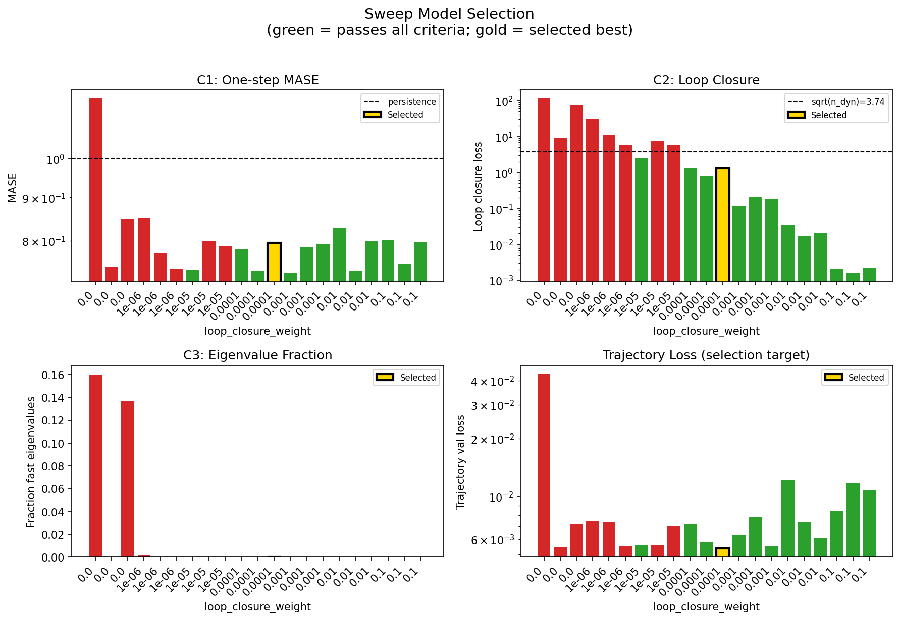
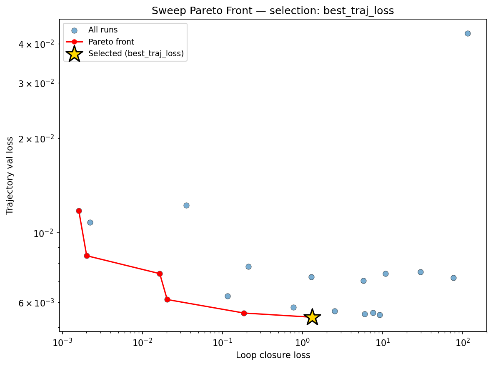
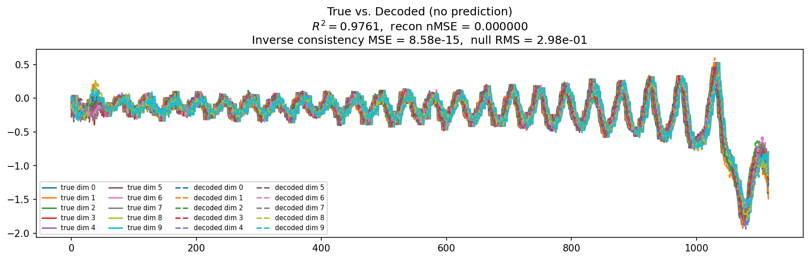
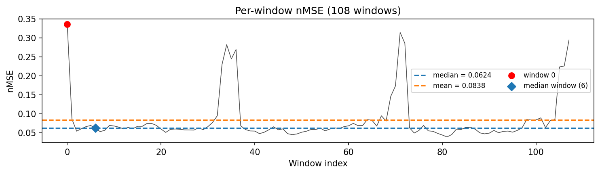
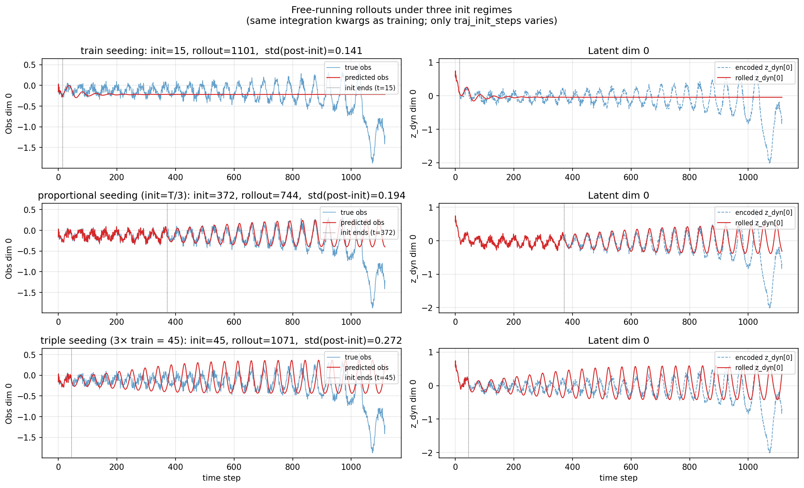
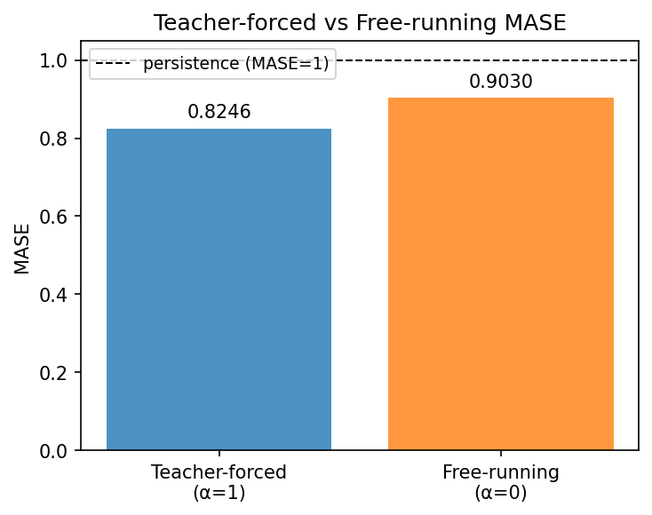
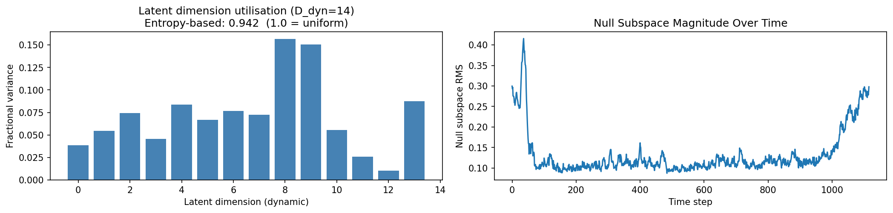
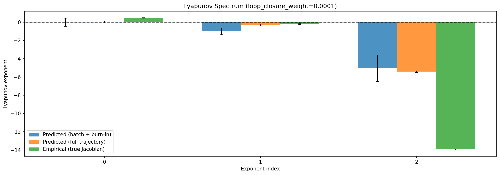
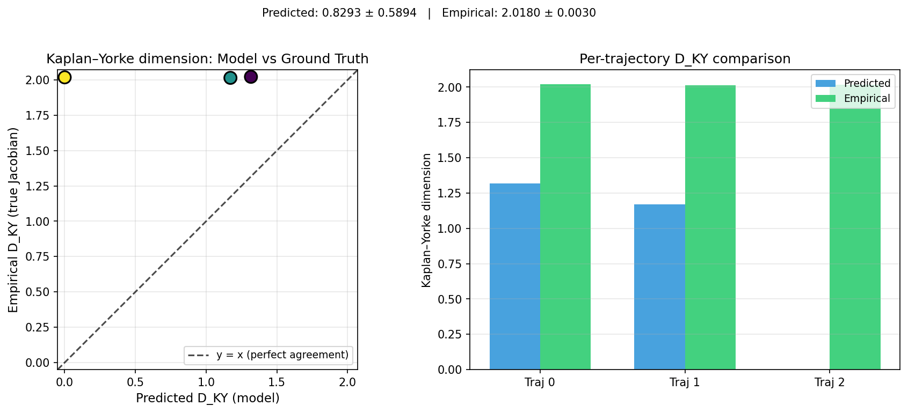
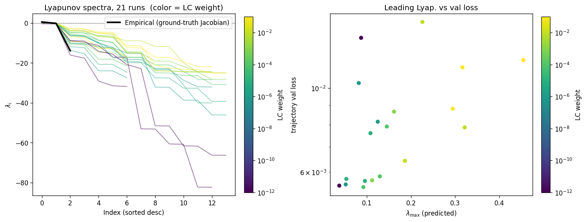
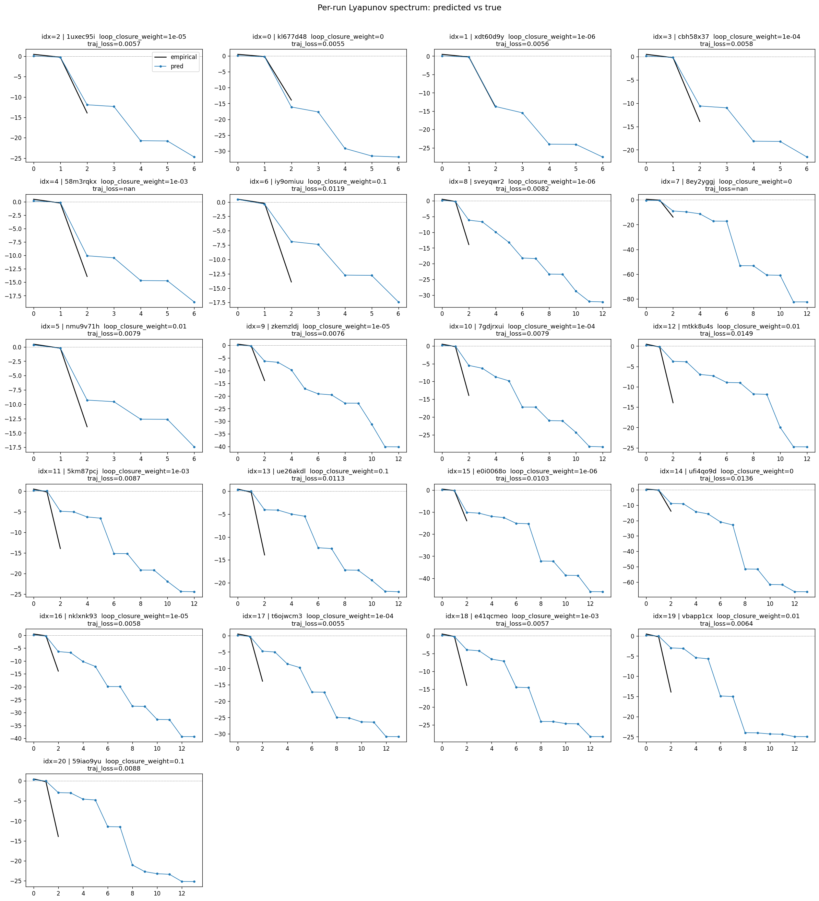
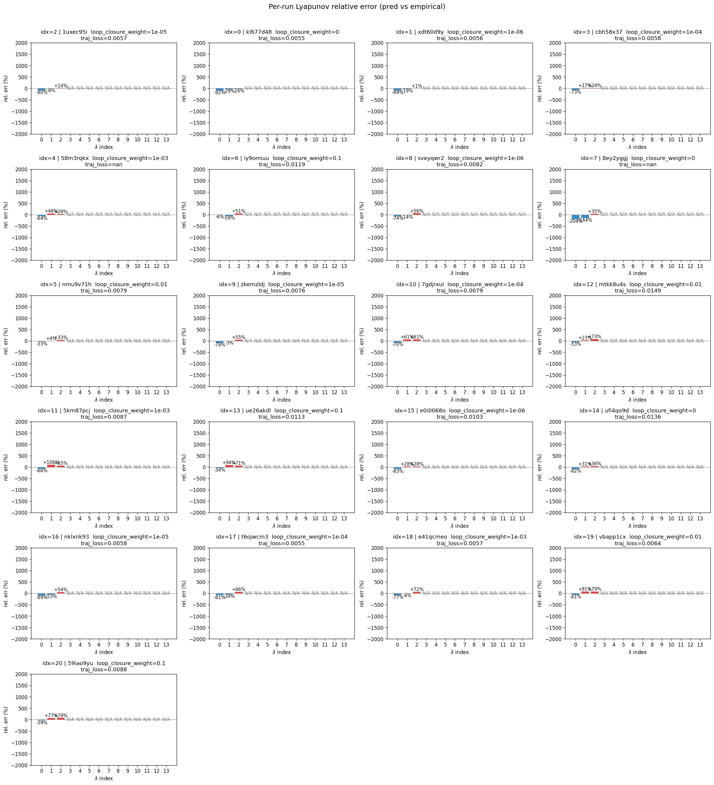
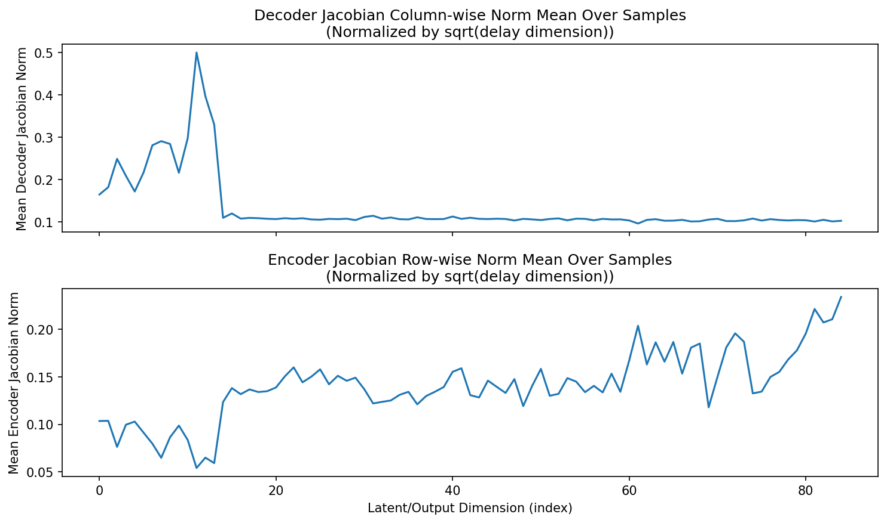
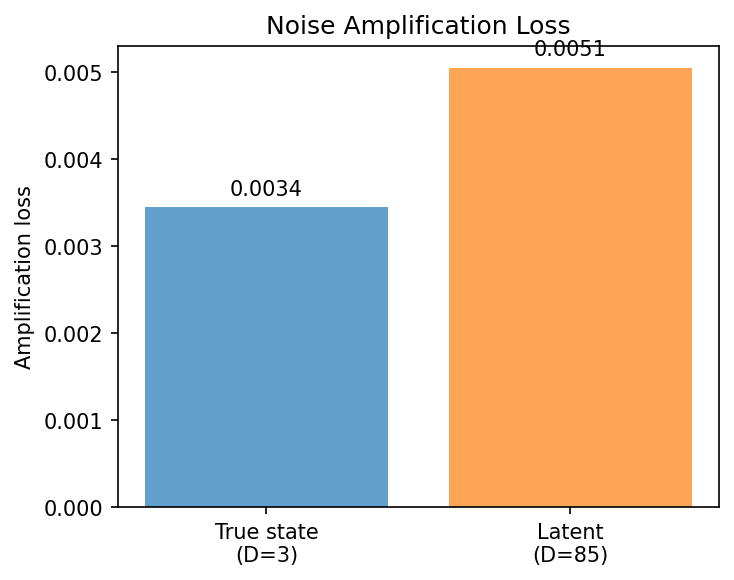
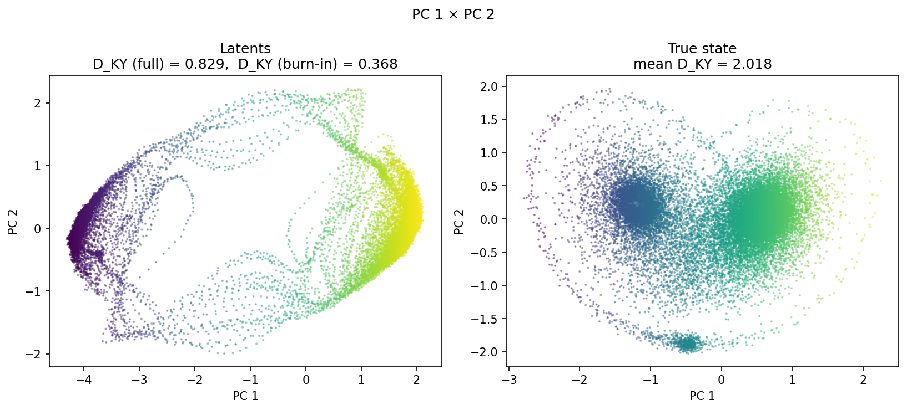
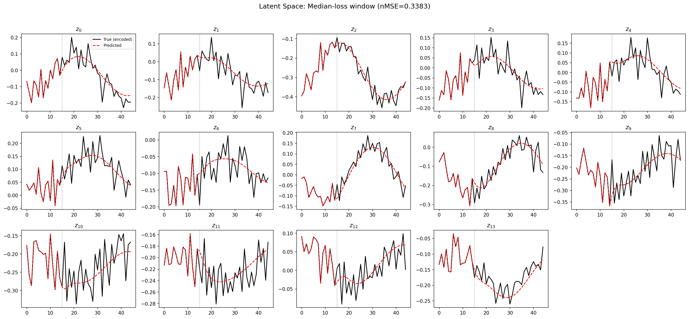
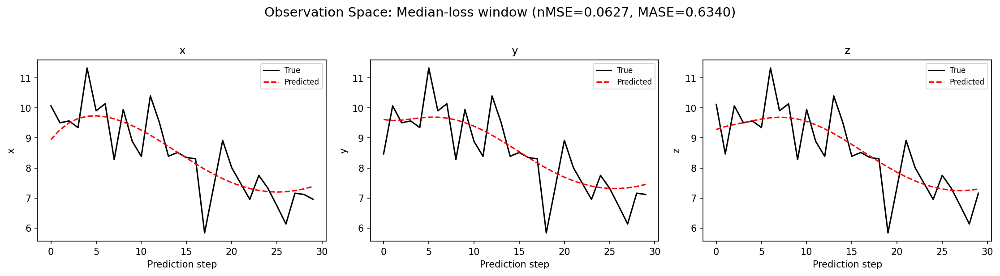
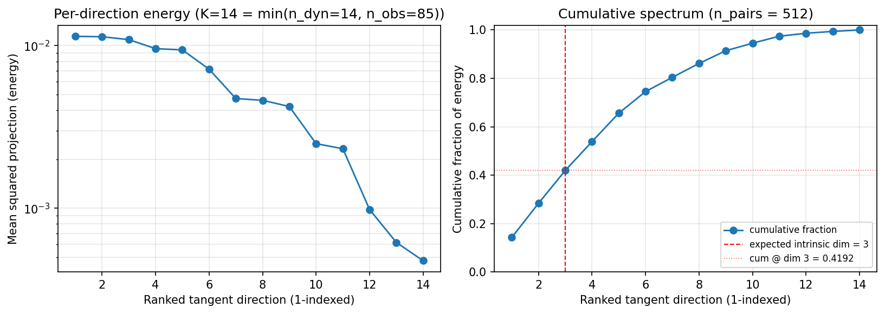
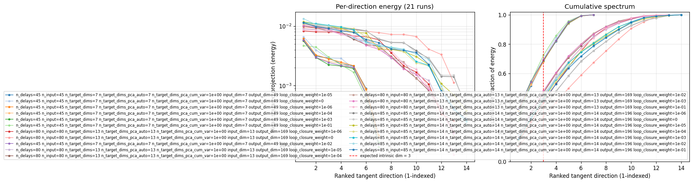
(to be written)
run_analytics stdoutrun_analyticsNo run_id provided — selecting best run from group 'lorenz_partial_additive_splitmode_p30_obsnoise005_top3nd_init15_autodim__lc_sweep__step1_int1_maxep80' ...
Found 21 total runs in JacobianODE/Lorenz_INDpartial_NDInitSweep_autodim_D1_NormTrue__JacobianODE (group=lorenz_partial_additive_splitmode_p30_obsnoise005_top3nd_init15_autodim__lc_sweep__step1_int1_maxep80)
All runs (state, loop_closure_weight, tangent_entropy_weight, kl_dyn_weight):
1uxec95i: state=finished, lc=1e-05, te=0.0, kl_dyn=0.0
kl677d48: state=finished, lc=0.0, te=0.0, kl_dyn=0.0
xdt60d9y: state=finished, lc=1e-06, te=0.0, kl_dyn=0.0
cbh58x37: state=finished, lc=0.0001, te=0.0, kl_dyn=0.0
58m3rqkx: state=finished, lc=0.001, te=0.0, kl_dyn=0.0
iy9omiuu: state=finished, lc=0.1, te=0.0, kl_dyn=0.0
sveyqwr2: state=finished, lc=1e-06, te=0.0, kl_dyn=0.0
8ey2yggj: state=finished, lc=0.0, te=0.0, kl_dyn=0.0
nmu9v71h: state=finished, lc=0.01, te=0.0, kl_dyn=0.0
zkemzldj: state=finished, lc=1e-05, te=0.0, kl_dyn=0.0
7gdjrxui: state=finished, lc=0.0001, te=0.0, kl_dyn=0.0
mtkk8u4s: state=finished, lc=0.01, te=0.0, kl_dyn=0.0
5km87pcj: state=finished, lc=0.001, te=0.0, kl_dyn=0.0
ue26akdl: state=finished, lc=0.1, te=0.0, kl_dyn=0.0
e0i0068o: state=finished, lc=1e-06, te=0.0, kl_dyn=0.0
ufi4qo9d: state=finished, lc=0.0, te=0.0, kl_dyn=0.0
nklxnk93: state=finished, lc=1e-05, te=0.0, kl_dyn=0.0
t6ojwcm3: state=finished, lc=0.0001, te=0.0, kl_dyn=0.0
e41qcmeo: state=finished, lc=0.001, te=0.0, kl_dyn=0.0
vbapp1cx: state=finished, lc=0.01, te=0.0, kl_dyn=0.0
59iao9yu: state=finished, lc=0.1, te=0.0, kl_dyn=0.0
slurm_timeout_min not found in any run config — falling back to 180 min
Including 1uxec95i (lc=1e-05): use_all_runs=True (state=finished)
Including kl677d48 (lc=0.0): use_all_runs=True (state=finished)
Including xdt60d9y (lc=1e-06): use_all_runs=True (state=finished)
Including cbh58x37 (lc=0.0001): use_all_runs=True (state=finished)
Including 58m3rqkx (lc=0.001): use_all_runs=True (state=finished)
Including iy9omiuu (lc=0.1): use_all_runs=True (state=finished)
Including sveyqwr2 (lc=1e-06): use_all_runs=True (state=finished)
Including 8ey2yggj (lc=0.0): use_all_runs=True (state=finished)
Including nmu9v71h (lc=0.01): use_all_runs=True (state=finished)
Including zkemzldj (lc=1e-05): use_all_runs=True (state=finished)
Including 7gdjrxui (lc=0.0001): use_all_runs=True (state=finished)
Including mtkk8u4s (lc=0.01): use_all_runs=True (state=finished)
Including 5km87pcj (lc=0.001): use_all_runs=True (state=finished)
Including ue26akdl (lc=0.1): use_all_runs=True (state=finished)
Including e0i0068o (lc=1e-06): use_all_runs=True (state=finished)
Including ufi4qo9d (lc=0.0): use_all_runs=True (state=finished)
Including nklxnk93 (lc=1e-05): use_all_runs=True (state=finished)
Including t6ojwcm3 (lc=0.0001): use_all_runs=True (state=finished)
Including e41qcmeo (lc=0.001): use_all_runs=True (state=finished)
Including vbapp1cx (lc=0.01): use_all_runs=True (state=finished)
Including 59iao9yu (lc=0.1): use_all_runs=True (state=finished)
Found 21 effectively-done sweep runs:
loop_closure_weight=0.0, tangent_entropy_weight=0.0, kl_dyn_weight=0.0 -> run_id=8ey2yggj
loop_closure_weight=0.0, tangent_entropy_weight=0.0, kl_dyn_weight=0.0 -> run_id=kl677d48
loop_closure_weight=0.0, tangent_entropy_weight=0.0, kl_dyn_weight=0.0 -> run_id=ufi4qo9d
loop_closure_weight=1e-06, tangent_entropy_weight=0.0, kl_dyn_weight=0.0 -> run_id=e0i0068o
loop_closure_weight=1e-06, tangent_entropy_weight=0.0, kl_dyn_weight=0.0 -> run_id=sveyqwr2
loop_closure_weight=1e-06, tangent_entropy_weight=0.0, kl_dyn_weight=0.0 -> run_id=xdt60d9y
loop_closure_weight=1e-05, tangent_entropy_weight=0.0, kl_dyn_weight=0.0 -> run_id=1uxec95i
loop_closure_weight=1e-05, tangent_entropy_weight=0.0, kl_dyn_weight=0.0 -> run_id=nklxnk93
loop_closure_weight=1e-05, tangent_entropy_weight=0.0, kl_dyn_weight=0.0 -> run_id=zkemzldj
loop_closure_weight=0.0001, tangent_entropy_weight=0.0, kl_dyn_weight=0.0 -> run_id=7gdjrxui
loop_closure_weight=0.0001, tangent_entropy_weight=0.0, kl_dyn_weight=0.0 -> run_id=cbh58x37
loop_closure_weight=0.0001, tangent_entropy_weight=0.0, kl_dyn_weight=0.0 -> run_id=t6ojwcm3
loop_closure_weight=0.001, tangent_entropy_weight=0.0, kl_dyn_weight=0.0 -> run_id=58m3rqkx
loop_closure_weight=0.001, tangent_entropy_weight=0.0, kl_dyn_weight=0.0 -> run_id=5km87pcj
loop_closure_weight=0.001, tangent_entropy_weight=0.0, kl_dyn_weight=0.0 -> run_id=e41qcmeo
loop_closure_weight=0.01, tangent_entropy_weight=0.0, kl_dyn_weight=0.0 -> run_id=mtkk8u4s
loop_closure_weight=0.01, tangent_entropy_weight=0.0, kl_dyn_weight=0.0 -> run_id=nmu9v71h
loop_closure_weight=0.01, tangent_entropy_weight=0.0, kl_dyn_weight=0.0 -> run_id=vbapp1cx
loop_closure_weight=0.1, tangent_entropy_weight=0.0, kl_dyn_weight=0.0 -> run_id=59iao9yu
loop_closure_weight=0.1, tangent_entropy_weight=0.0, kl_dyn_weight=0.0 -> run_id=iy9omiuu
loop_closure_weight=0.1, tangent_entropy_weight=0.0, kl_dyn_weight=0.0 -> run_id=ue26akdl
n_dims=80, n_latent=80, n_dyn=13, dt=0.0150
run=8ey2yggj: DiagnosticMetrics(one_step_mase=1.1760138273239136, loop_closure_loss=114.85285949707031, fast_eigenvalue_fraction=0.1599999964237213, trajectory_val_loss=0.04316197708249092) (from W&B history)
run=kl677d48: DiagnosticMetrics(one_step_mase=0.7458581328392029, loop_closure_loss=9.159311294555664, fast_eigenvalue_fraction=0.0, trajectory_val_loss=0.00548354908823967) (from W&B history)
run=ufi4qo9d: DiagnosticMetrics(one_step_mase=0.8486980199813843, loop_closure_loss=76.57162475585938, fast_eigenvalue_fraction=0.136428564786911, trajectory_val_loss=0.007198604289442301) (from W&B history)
run=e0i0068o: DiagnosticMetrics(one_step_mase=0.8518094420433044, loop_closure_loss=29.876296997070312, fast_eigenvalue_fraction=0.002142857061699033, trajectory_val_loss=0.007505582179874182) (from W&B history)
run=sveyqwr2: DiagnosticMetrics(one_step_mase=0.7743359208106995, loop_closure_loss=10.841922760009766, fast_eigenvalue_fraction=0.0, trajectory_val_loss=0.00740537466481328) (from W&B history)
run=xdt60d9y: DiagnosticMetrics(one_step_mase=0.7410888671875, loop_closure_loss=5.987114906311035, fast_eigenvalue_fraction=0.0, trajectory_val_loss=0.005518102552741766) (from W&B history)
run=1uxec95i: DiagnosticMetrics(one_step_mase=0.7401926517486572, loop_closure_loss=2.5333330631256104, fast_eigenvalue_fraction=0.0, trajectory_val_loss=0.005629631690680981) (from W&B history)
run=nklxnk93: DiagnosticMetrics(one_step_mase=0.7990938425064087, loop_closure_loss=7.5953779220581055, fast_eigenvalue_fraction=0.0, trajectory_val_loss=0.005570418667048216) (from W&B history)
run=zkemzldj: DiagnosticMetrics(one_step_mase=0.7877763509750366, loop_closure_loss=5.7772932052612305, fast_eigenvalue_fraction=0.0, trajectory_val_loss=0.007030485663563013) (from W&B history)
run=7gdjrxui: DiagnosticMetrics(one_step_mase=0.7840129137039185, loop_closure_loss=1.2880041599273682, fast_eigenvalue_fraction=0.0, trajectory_val_loss=0.007233723998069763) (from W&B history)
run=cbh58x37: DiagnosticMetrics(one_step_mase=0.7383485436439514, loop_closure_loss=0.7728196978569031, fast_eigenvalue_fraction=0.0, trajectory_val_loss=0.005796636454761028) (from W&B history)
run=t6ojwcm3: DiagnosticMetrics(one_step_mase=0.7952678799629211, loop_closure_loss=1.3219488859176636, fast_eigenvalue_fraction=0.0, trajectory_val_loss=0.005382574629038572) (from W&B history)
run=58m3rqkx: DiagnosticMetrics(one_step_mase=0.7336225509643555, loop_closure_loss=0.11537840217351913, fast_eigenvalue_fraction=0.0, trajectory_val_loss=0.00628487067297101) (from W&B history)
run=5km87pcj: DiagnosticMetrics(one_step_mase=0.7872591018676758, loop_closure_loss=0.21067243814468384, fast_eigenvalue_fraction=0.0, trajectory_val_loss=0.007800977677106857) (from W&B history)
run=e41qcmeo: DiagnosticMetrics(one_step_mase=0.7931081652641296, loop_closure_loss=0.18561454117298126, fast_eigenvalue_fraction=0.0, trajectory_val_loss=0.005550103727728128) (from W&B history)
run=mtkk8u4s: DiagnosticMetrics(one_step_mase=0.8273574709892273, loop_closure_loss=0.03547442704439163, fast_eigenvalue_fraction=0.0, trajectory_val_loss=0.012232600711286068) (from W&B history)
run=nmu9v71h: DiagnosticMetrics(one_step_mase=0.7369770407676697, loop_closure_loss=0.016471894457936287, fast_eigenvalue_fraction=0.0, trajectory_val_loss=0.0074092852883040905) (from W&B history)
run=vbapp1cx: DiagnosticMetrics(one_step_mase=0.7985788583755493, loop_closure_loss=0.02038237266242504, fast_eigenvalue_fraction=0.0, trajectory_val_loss=0.006127685774117708) (from W&B history)
run=59iao9yu: DiagnosticMetrics(one_step_mase=0.8011139035224915, loop_closure_loss=0.0020117645617574453, fast_eigenvalue_fraction=0.0, trajectory_val_loss=0.00845099613070488) (from W&B history)
run=iy9omiuu: DiagnosticMetrics(one_step_mase=0.750921905040741, loop_closure_loss=0.0016055176965892315, fast_eigenvalue_fraction=0.0, trajectory_val_loss=0.011749627999961376) (from W&B history)
run=ue26akdl: DiagnosticMetrics(one_step_mase=0.7976939678192139, loop_closure_loss=0.00222789472900331, fast_eigenvalue_fraction=0.0, trajectory_val_loss=0.010797224938869476) (from W&B history)
Ranking method: best_traj_loss
Best run ID: t6ojwcm3
Best loop_closure_weight: 0.0001
Best tangent_entropy_weight: 0.0
Best kl_dyn_weight: 0.0
Best traj loss: 0.005383
Criteria applied: ['C1', 'C2', 'C3']
Surviving: 13 / 21
Auto-selected run_id: t6ojwcm3
======================================================================
PARETO FRONTIER RUNS (6 runs)
======================================================================
Run ID LC Loss Traj Val Loss
------------ -------------- --------------
iy9omiuu 0.001606 0.011750
59iao9yu 0.002012 0.008451
nmu9v71h 0.016472 0.007409
vbapp1cx 0.020382 0.006128
e41qcmeo 0.185615 0.005550
t6ojwcm3 1.321949 0.005383 <-- selected
======================================================================
RANKING METHOD COMPARISON (over 13 survivors)
======================================================================
Method Run ID LC Loss Traj Val Loss
---------------------- ------------ -------------- --------------
best_traj_loss t6ojwcm3 1.321949 0.005383 <-- active
pareto_knee vbapp1cx 0.020382 0.006128
geo_rank t6ojwcm3 1.321949 0.005383
minimax_rank vbapp1cx 0.020382 0.006128
geo_log_score t6ojwcm3 1.321949 0.005383
minimax_log_score vbapp1cx 0.020382 0.006128
======================================================================
Loading run t6ojwcm3 from JacobianODE/Lorenz_INDpartial_NDInitSweep_autodim_D1_NormTrue__JacobianODE ...
Loading checkpoint epoch=78-step=15800.ckpt...
Train dataset shape: torch.Size([23562, 45, 85])
Validation dataset shape: torch.Size([7497, 45, 85])
Test dataset shape: torch.Size([3213, 45, 85])
Train trajectories dataset shape: torch.Size([22, 1116, 85])
Validation trajectories dataset shape: torch.Size([7, 1116, 85])
Test trajectories dataset shape: torch.Size([3, 1116, 85])
Loading checkpoint epoch=78-step=15800.ckpt...
Computing reconstruction ...
Computing MASE ...
Teacher-forced MASE: 0.8246
Free-running MASE: 0.9030
Computing latent utilization ...
Entropy-based utilization: 0.942
Null subspace mean RMS: 1.425208e-01
Computing Lyapunov exponents ...
Computing full-trajectory Lyapunov (3 test trajs, T=1116) ...
Predicted Lyapunov exponents (batch+burn-in, 128 windowed trajs):
λ_1 = +0.0006 ± 0.4436
λ_2 = -0.9953 ± 0.3728
λ_3 = -5.0425 ± 1.4588
λ_4 = -6.2008 ± 1.4946
λ_5 = -9.4081 ± 1.9551
λ_6 = -10.2024 ± 1.2271
λ_7 = -17.3310 ± 2.2321
λ_8 = -17.4790 ± 2.1450
λ_9 = -24.6929 ± 2.1957
λ_10 = -24.9632 ± 2.2386
λ_11 = -26.5658 ± 2.6580
λ_12 = -26.6393 ± 2.6406
λ_13 = -30.5648 ± 2.4523
λ_14 = -30.5988 ± 2.4451
Predicted Lyapunov exponents (full-length, 3 test trajs):
λ_1 = +0.0303 ± 0.1048
λ_2 = -0.2850 ± 0.1071
λ_3 = -5.4114 ± 0.0947
λ_4 = -5.6706 ± 0.1233
λ_5 = -9.5868 ± 0.0835
λ_6 = -10.0501 ± 0.0765
λ_7 = -17.7297 ± 0.0514
λ_8 = -17.7474 ± 0.0414
λ_9 = -25.0602 ± 0.0435
λ_10 = -25.3353 ± 0.0775
λ_11 = -26.6458 ± 0.1030
λ_12 = -26.7785 ± 0.0774
λ_13 = -30.9407 ± 0.0761
λ_14 = -30.9585 ± 0.0733
Empirical Lyapunov exponents (mean ± std):
λ_1 = +0.4677 ± 0.0259
λ_2 = -0.2173 ± 0.0549
λ_3 = -13.9174 ± 0.0513
Mean KY dim (predicted): 0.829 ± 0.589
Mean KY dim (empirical): 2.018 ± 0.003
Mean KY dim (burn-in): 0.368 ± 0.709
Computing prediction windows ...
Windows: 108 — nMSE min=0.0393, median=0.0624, mean=0.0838, max=0.3361
Computing long-trajectory free-running rollouts ...
Computing encoder/decoder Jacobians ...
encoder_jacobian: (128, 85, 85)
decoder_jacobian: (128, 85, 85)
Computing amplification loss ...
Amplification loss — True state: 0.003446
Amplification loss — Latent: 0.005050
Computing tangent space spectrum ...